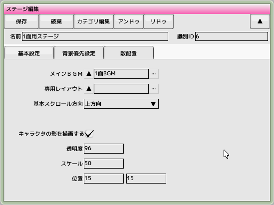
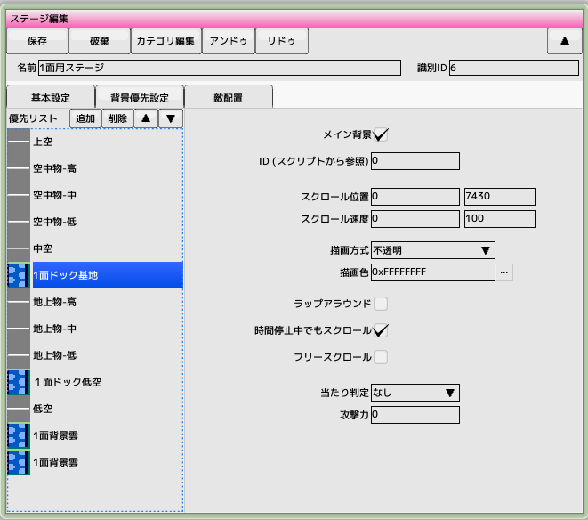
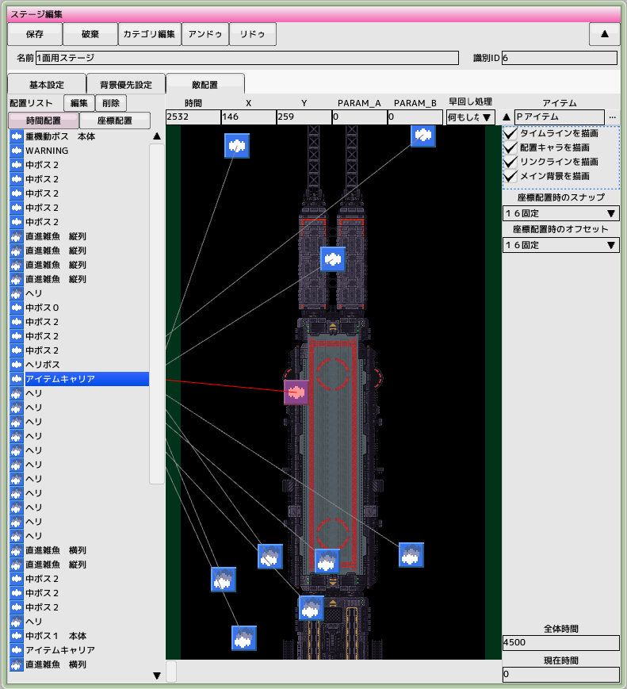

■元のページへ戻る
■元のページへ戻る
基本設定タブ

- メインBGM
ステージ開始時に流れるBGMを選択します
- 専用レイアウト
このステージ専用のレイアウトを指定します（無指定時にはデフォルトレイアウトが適用されます）
- 基本スクロール方向
縦スクロールか横スクロールかはここで切り替えます
- ステージ開始処理
スクリプトで画面解像度、メイン領域等を変更する場合、フレームスキップで画面が一瞬崩れるのを防ぎます
- 影の描画設定
キャラクタの影を描画するパラメータを設定します
- キャラクタの影を描画する
チェックするとステージ内で影の描画を行います（キャラクタ設定で属性を指定してください）
- 透明度（アルファ値）
影の透明度をアルファ値で指定します(0-255)
- スケール（100で等倍）
影のサイズを倍率で指定します
- 表示オフセット
影の描画位置を指定します
- ポーズ無効化
メインステージ内でポーズボタンを無効にしたい場合チェックします
- ボタン無効化
メインステージ以外でシーン遷移用のボタン操作を無効化します
表示優先設定タブ

ここではステージで表示するキャラクタと背景の優先順位とスクロール速度等のパラメータを設定します
- 優先リスト
ここに必要なだけ背景を追加していきます。背景を選択したら上下のボタンをクリックして優先順位を決定します（上ほど優先が高い）。優先順位を決定したら右側のパラメータを設定してください
上空や中空はキャラクタが登場するレイヤーです
- メイン背景
スクロールの基準となる唯一の背景です。背景に同期するキャラクタはこのチェックの付いた背景に同期します
- ID(スクリプトから参照)
スクロール位置や速度をスクリプトから変更するために使用する識別ID
- スクロール開始位置
ステージ開始時の背景を表示する位置です
- スクロール速度
背景がスクロールする速度を指定します
- 描画方式
背景を描画する方式を指定します
- 描画色
背景を描画する際のカラーをARGB32ビットで指定します
- ラップアラウンド
背景の範囲外を繰り返して表示します
- 時間停止中でもスクロールする
時間停止キャラクタが出現中でもスクロールを停止させません
- フリースクロール
自機の左右の動きに合わせて背景が左右にスクロールします。背景の横幅を画面サイズより大きくしてください
横スクロールの場合は、時機の上下の動きに合わせて背景が上下にスクロールします
- 当たり判定
当たり判定を持つ背景の場合、ありに設定してください（背景設定でHITを設定済みであること）
- 攻撃力
背景に当たった時の攻撃力
敵配置タブ

まずここでやることは、ステージ全体の長さをフレーム単位で指定することです（右下の全体時間）。その後、配置エリアをスクロールさせて（右ドラッグ、もしくはタイムバーをドラッグ）配置したい場所（時間）を画面内へ入れます
プロジェクトウインドウのキャラクタリスト、及び編隊リストから配置エリアへドラッグ＆ドロップすることで配置が行えます
- 配置の概念
配置方式には大きく分けて二種類あります
- 時間で配置（青色）
指定の時間がきたら出現するタイプの敵です。背景がない（無限ループ）タイプのSTGはおおむねこれで配置していきます
- 座標で配置（緑色）
指定位置へ配置するタイプの敵です。背景と同期した敵を作りたいときに使用します。ただし、メイン背景と呼ばれる背景を登録しなければ使うことができません（メイン背景はステージに一つだけ存在できる背景です）
- 配置方式の切り替え方法
配置リストにあるボタン「時間配置」「座標配置」で切り替えます
- 時間の概念
時間はフレーム（1/60秒）が最小単位です。配置画面では１フレームが１ピクセルの長さです（タイムラインを見てください）
配置後データの変更
配置リスト内の変更したい項目をクリックします（ダブルクリックで配置エリア内の中央位置へフォーカスします）。すると配置エリアの上方に各種情報が表示されますので、変更等が行えます
- 時間（座標配置の場合は無効）
配置された時間情報
- Ｘ
配置されたＸ位置情報
- Ｙ（時間配置の場合は無効）
配置されたＹ位置情報
- PARAM_A,B
スクリプトへ引き渡されるパラメータ
スクリプトの条件分岐の比較対象にすることができます
- 早回し処理
「画面内にいる場合は出現しない」を選択すると、早回し対象（キャラクタ設定）が存在する場合は出現がスキップされます
- アイテム
破壊したときに出現するアイテムを選択します。編隊の場合は編隊内の最後の敵に設定されます
マウス操作
範囲選択、アイコンを左ドラッグで移動
右ドラッグでスクロール、ホイールで拡大縮小
■ページ上部へ戻る